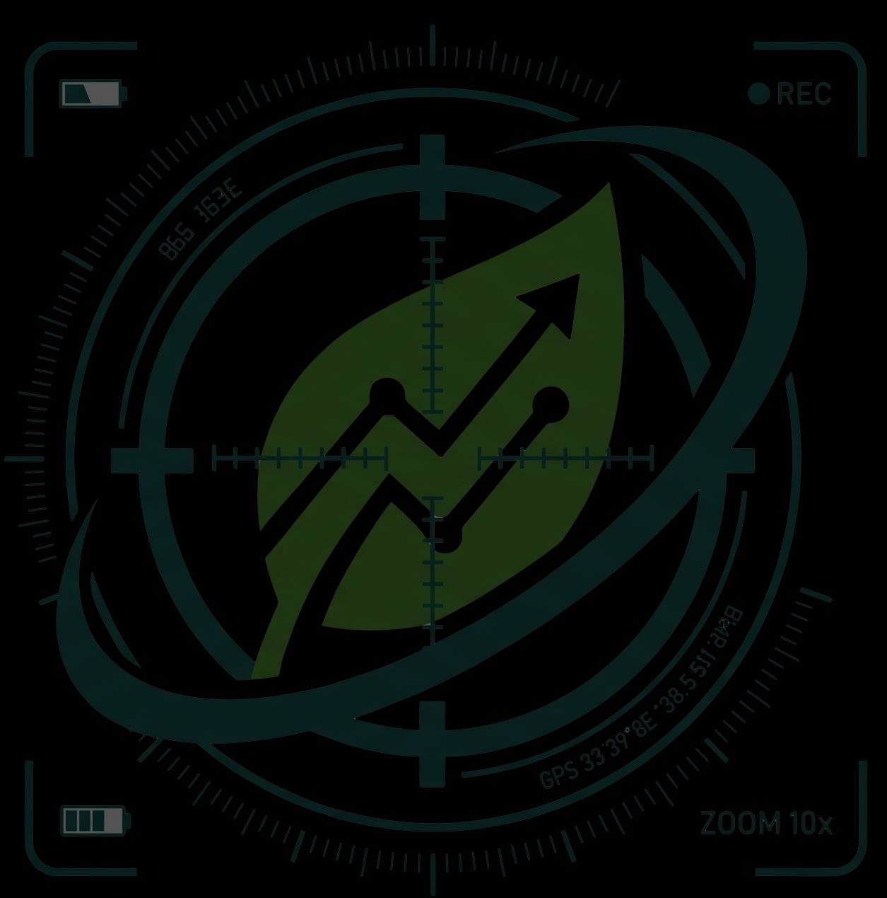

Bölgenin dört bir yanında gerçekleşen ekolojik ihlalleri takip ediyoruz. Haritalar, raporlar ve anlık taramalarla çevresel yıkıma karşı belge üretiyoruz.
Vatandaş gözlemcilerden, resmi belgelerden ve dijital kaynaklardan derlenen verilerle bütünleşik bir ekoloji izleme ekosistemi kuruyoruz.
Resmî Gazete, ÇED kararları, MAPEG ve EPDK belgelerini her gün otomatik olarak tarıyoruz.
Tüm ihlaller, projeler ve direniş noktaları interaktif GeoJSON haritasında görselleştiriliyor.
Bianet, Gazete Duvar ve onlarca bağımsız kaynak ile sosyal medyadan çevre haberleri derleniyor.
Akademisyenler, avukatlar ve yerel izleme gruplarıyla hazırlanan derinlemesine araştırma dosyaları.
NASA FIRMS uydu yangın verileri, OSM ve koruma alanları veritabanıyla habitat değişimleri izleniyor.
Yerel halk hareketleri, nöbetler ve protestolar belgeleniyor; dayanışma ağları görünür kılınıyor.
Son 24 saatin verileri — bütünleşik bir perspektiften.
Günlük tarama sonucunda tespit edilen ve belgelenen ihlaller.
RSS beslemeleri ve web kaynaklarından çekilen çevre haberleri.
Yaban hayatı, bitki örtüsü ve dezavantajlı topluluklar — ekolojik çöküşün ilk faturasını ödeyen varlıklar.
Yaban hayatı nüfus takibi, habitat kayıpları ve tehdit altındaki türlerin belgelenmesi.
🌳Orman tahribatı, ağaç kesimi ve doğal habitatların yok oluşunu uydu verileriyle izliyoruz.
🐟Nehir, göl ve deniz ekosistemlerindeki biyolojik çeşitlilik kaybı ve kirlilik izleme.
👩🌾Toprak hakkı ihlalleri, kamulaştırma mağdurları ve köy boşaltmaları — insan boyutu.
🏔️Geleneksel yaşam alanlarının korunması ve yerel bilginin belgelenmesi.
🎣Deniz kirliliği, yasa dışı avcılık ve balıkçılık ekonomisine etkilerin takibi.
🌾Sanayi ve maden projelerinin verimli tarım topraklarına el koyması.
💧İçme suyu kaynaklarının özelleştirilmesi ve kirletilmesine karşı topluluk direnci.
Bulunduğunuz yerde gözlemlediğiniz çevresel tahribatı bildirin. Belge, fotoğraf ve koordinat ile katkı sağlayın.